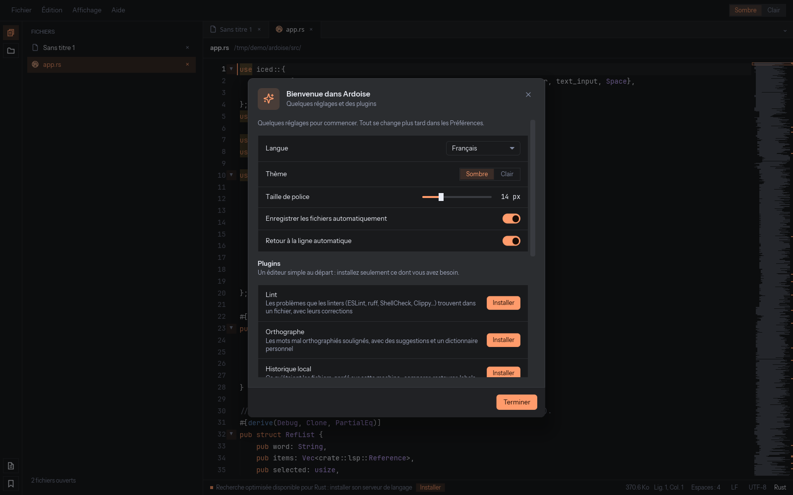
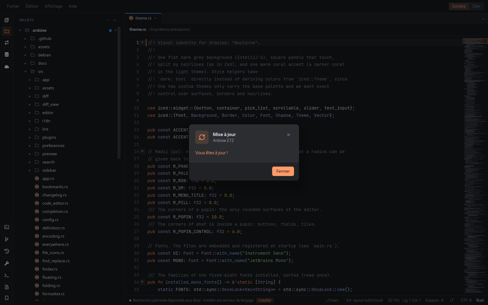
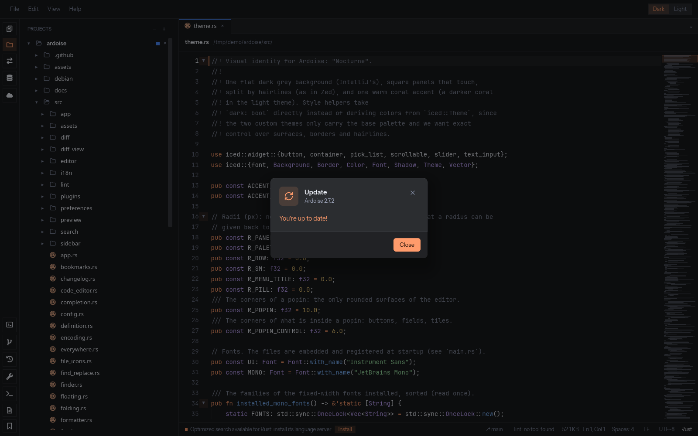

Installer ArdoiseInstall Ardoise
Choisissez la méthode qui vous convient. Chacune a sa commande de désinstallation, et rien ne demande de compte.Pick the method that suits you. Each has its own uninstall command, and nothing asks for an account.
Une seule commande pour Linux et macOS : elle détecte votre système, télécharge la dernière version et la vérifie (signature Ed25519 du fichier SHA256SUMS, puis somme de contrôle du fichier).One command for Linux and macOS: it detects your system, downloads the latest release and verifies it (Ed25519 signature on SHA256SUMS, then the file's checksum).
$ curl -fsSL https://raw.githubusercontent.com/ardoise-editor/ardoise/main/install.sh | bashDésinstallerUninstall
$ curl -fsSL https://raw.githubusercontent.com/ardoise-editor/ardoise/main/uninstall.sh | bashLe script détecte comment Ardoise a été installé et le retire, avec tout ce qu'il avait conservé : réglages, session (le texte des fichiers non enregistrés), plugins et leurs données, serveurs de langage, et les mots de passe enregistrés dans le trousseau du système. Un dossier Scratch choisi par vous est laissé intact. Fermez Ardoise avant.
The script detects how Ardoise was installed and removes it, with everything it kept: settings, session (the text of unsaved files), plugins and their data, language servers, and the passwords the plugins saved in the system keychain. A scratch folder you chose yourself is left alone. Close Ardoise first.
--keep-data :to keep your data for a reinstall, add --keep-data:$ curl -fsSL https://raw.githubusercontent.com/ardoise-editor/ardoise/main/uninstall.sh | bash -s -- --keep-dataInstalle Ardoise.app dans /Applications et place ardoise dans votre PATH.Installs Ardoise.app into /Applications and puts ardoise on your PATH.
$ brew install --cask ardoise-editor/tap/ardoise$ xattr -dr com.apple.quarantine /Applications/Ardoise.appDésinstallerUninstall
$ brew uninstall --cask ardoisePour supprimer aussi vos réglages :To drop your settings too:
$ brew uninstall --zap --cask ardoiseTélécharge et installe le dernier paquet .deb.Downloads and installs the latest .deb package.
$ curl -fsSL https://api.github.com/repos/ardoise-editor/ardoise/releases/latest \
| sed -n 's/.*"browser_download_url": *"\([^"]*\/ardoise_[^"]*\.deb\)".*/\1/p' \
| xargs curl -fsSLO
$ sudo apt install ./ardoise_*.deb && rm ardoise_*.debSHA256SUMS depuis la page des versions, à côté du .deb, puis :this command does not verify the download; the recommended script does. To check by hand, download SHA256SUMS from the Releases page next to the .deb and run:$ sha256sum -c --ignore-missing SHA256SUMSDésinstallerUninstall
$ sudo apt remove ardoise
# ou
$ sudo dpkg -r ardoisePour n'importe quelle distribution Linux x86_64 : déposez le binaire dans /usr/local/bin.For any x86_64 Linux distribution: drop the binary into /usr/local/bin.
$ VERSION=$(curl -fsSL https://api.github.com/repos/ardoise-editor/ardoise/releases/latest | grep '"tag_name"' | head -1 | sed 's/.*"\(.*\)".*/\1/')
$ curl -fsSL "https://github.com/ardoise-editor/ardoise/releases/download/${VERSION}/ardoise-${VERSION}-x86_64-linux.tar.gz" | tar xz
$ sudo mv ardoise /usr/local/bin/DésinstallerUninstall
$ sudo rm /usr/local/bin/ardoiseIl faut Rust 1.90 ou plus récent. Sous Ubuntu / Debian, installez d'abord les bibliothèques GTK 3 et libxkbcommon.You need Rust 1.90 or newer. On Ubuntu / Debian, install the GTK 3 and libxkbcommon development packages first.
# Prérequis (Ubuntu / Debian)
$ sudo apt-get install libgtk-3-dev libxkbcommon-dev
# Compiler et lancer
$ git clone https://github.com/ardoise-editor/ardoise
$ cd ardoise
$ cargo build --release
$ ./target/release/ardoisePour développer : cargo run, cargo test, cargo clippy, cargo fmt.To develop: cargo run, cargo test, cargo clippy, cargo fmt.
Votre système est détecté pour pré-sélectionner l'onglet. Les versions sont sur laYour system is detected to pre-select the tab. Releases are on the page des versionsReleases page.
Configuration requiseRequirements
| SystèmeSystem | ArchitectureArchitecture | RemarqueNote |
|---|---|---|
| macOSmacOS | Apple Silicon (aarch64)Apple Silicon (aarch64) | Signé ad hoc, non notarisé (voir l'onglet Homebrew).Signed ad-hoc, not notarised (see the Homebrew tab). |
| LinuxLinux | x86_64x86_64 | Paquet .deb, tar.gz ou script ; bibliothèques GTK 3 et libxkbcommon pour compiler..deb package, tar.gz or script; GTK 3 and libxkbcommon libraries to build. |
Premier lancementFirst launch
Au tout premier lancement, une fenêtre d'accueil règle l'essentiel : la langue, le thème, la taille du texte, l'enregistrement et le retour à la ligne, puis propose d'installer en un clic les plugins officiels. Elle ne s'affiche qu'une fois ; tout reste modifiable dans les Préférences.
On the very first launch, a welcome window sets the essentials: language, theme, text size, saving and wrapping, then offers the official plugins to install in one click. It shows once; everything stays in the Preferences.

La fenêtre d'accueil du premier lancement (« Bienvenue dans Ardoise ») avec la liste des plugins à installer. Pour la revoir : désinstaller avec le script, ou lancer avec un dossier de données vide.The first-launch welcome window with the list of plugins to install.
Capture à venirScreenshot to comeLancer depuis le terminalLaunch from the terminal
$ ardoise # ouvre la dernière session
$ ardoise chemin/fichier # ouvre un fichier précis (plusieurs fichiers : un onglet chacun)
$ ardoise nouveau.txt # un fichier qui n'existe pas s'ouvre vide ; enregistrer le créeMettre à jourUpdate
Menu Aide › Rechercher des mises à jour… : Ardoise compare sa version à la dernière publiée, télécharge la mise à jour, en vérifie la somme de contrôle et la signature (elle est refusée si elle n'a pas été publiée par les mainteneurs), puis redémarre. Selon le mode d'installation, il se peut que la mise à jour intégrée ne soit pas disponible : téléchargez alors la nouvelle version à la main (ou brew upgrade --cask ardoise).
Menu Help › Check for updates…: Ardoise compares its version to the latest one, downloads the update, verifies its checksum and signature (it is refused if it was not published by the maintainers), then restarts. Depending on how it was installed, the in-app update may be unavailable: download the new version by hand (or brew upgrade --cask ardoise).


La fenêtre « Mise à jour » (« Vous êtes à jour ! » ou « La version X est disponible »).The Update window (“You're up to date!” or “Version X is available”).
Capture à venirScreenshot to comeOù sont mes fichiers ?Where are my files?
| QuoiWhat | LinuxLinux | macOSmacOS |
|---|---|---|
| Session (y compris le texte non enregistré)Session (unsaved text included) | ~/.local/share/ardoise/session.json | ~/Library/Application Support/ardoise/session.json |
| Serveurs de langageLanguage servers | ~/.local/share/ardoise/lsp | ~/Library/Application Support/ardoise/lsp |
| Données des pluginsPlugin data | ~/.local/share/ardoise/plugin-data/<id>/ | ~/Library/Application Support/ardoise/plugin-data/<id>/ |
DésinstallerUninstall
Chaque méthode d'installation a sa propre désinstallation, détaillée dans son onglet ci-dessus. Le résumé :
Each install method has its own uninstall, detailed in its tab above. In short:
| Installé avecInstalled with | Désinstaller avecUninstall with |
|---|---|
| ScriptScript | curl -fsSL …/uninstall.sh | bash ( --keep-data ) |
| HomebrewHomebrew | brew uninstall --cask ardoise ( --zap ) |
| .deb.deb | sudo apt remove ardoise |
| tar.gztar.gz | sudo rm /usr/local/bin/ardoise |